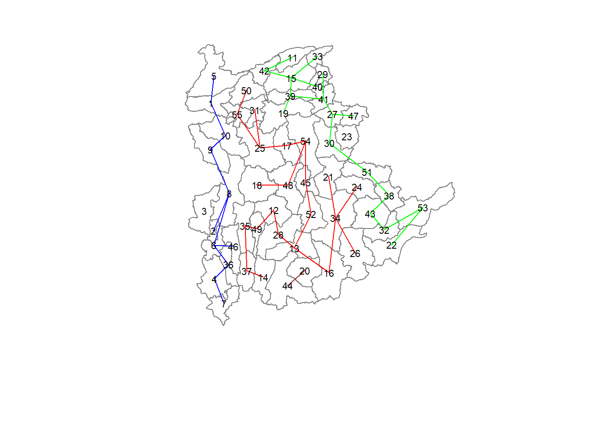
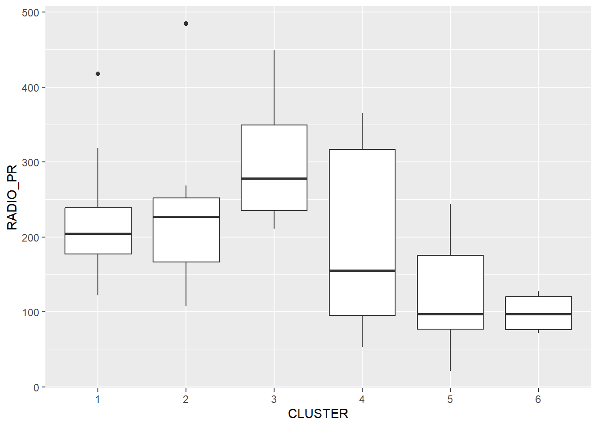
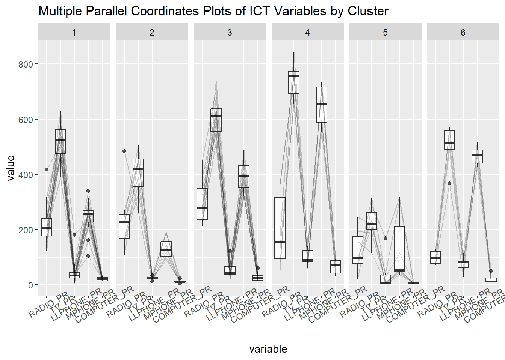

pacman::p_load(spdep, tmap, sf, ClustGeo, ggpubr, cluster, factoextra, NbClust, heatmaply, corrplot, psych, tidyverse, GGally) Hands-on Exercise 8
Geographical Segmentation with Spatially Constrained Clustering Techniques
1.0 Overview
In this exercises we would delineate homogeneous region by using geographically referenced multivariate data. There are two major analysis, namely:
hierarchical cluster analysis; and
spatially constrained cluster analysis.
1.1 Learning Outcome
These are the LOs:
to convert GIS polygon data into R’s simple feature data.frame by using appropriate functions of sf package of R;
to convert simple feature data.frame into R’s SpatialPolygonDataFrame object by using appropriate sf of package of R;
to perform custer analysis by using hclust() of Base R;
to perform spatially constrained cluster analysis using skater() of Base R; and
to visualise the analysis output by using ggplot2 and tmap package.
1.2 The Analytical Question
In geobusiness and spatial policy, it is a common practice to delineate the market or planning area into homogeneous regions by using multivariate data. In this hands-on exercise, we are interested to delineate Shan State, Myanmar into homogeneous regions by using multiple Information and Communication technology (ICT) measures, namely: Radio, Television, Land line phone, Mobile phone, Computer, and Internet at home.
2.0 Data Set-up
2.1 The data
Two data sets will be used in this study. They are:
Myanmar Township Boundary Data (i.e. myanmar_township_boundaries) : This is a GIS data in ESRI shapefile format. It consists of township boundary information of Myanmar. The spatial data are captured in polygon features.
Shan-ICT.csv: This is an extract of The 2014 Myanmar Population and Housing Census Myanmar at the township level.
Both data sets are download from Myanmar Information Management Unit (MIMU)
2.2 Installing and loading R packages
Before we get started, it is important for us to install the necessary R packages into R and launch these R packages into R environment.
The R packages needed for this exercise are as follows:
Spatial data handling
- sf, rgdal and spdep
Attribute data handling
- tidyverse, especially readr, ggplot2 and dplyr
Choropleth mapping
- tmap
Multivariate data visualisation and analysis
- coorplot, ggpubr, and heatmaply
Cluster analysis
cluster
ClustGeo
The code chunks below installs and launches these R packages into R environment.
2.2 Data Import and Preparation
2.2.1 Importing geospatial data into R environment
In this section, you will import Myanmar Township Boundary GIS data and its associated attrbiute table into R environment.
The Myanmar Township Boundary GIS data is in ESRI shapefile format. It will be imported into R environment by using the st_read() function of sf.
The code chunks used are shown below:
shan_sf <- read_rds("data/rds/shan_sf.rds")shan_sfSimple feature collection with 55 features and 22 fields
Geometry type: MULTIPOLYGON
Dimension: XY
Bounding box: xmin: 96.15107 ymin: 19.29932 xmax: 101.1699 ymax: 24.15907
Geodetic CRS: WGS 84
First 10 features:
ST ST_PCODE DT.x DT_PCODE.x TS.x TS_PCODE DT_PCODE.y
1 Shan (North) MMR015 Mongmit MMR015D008 Mongmit MMR015017 MMR015D003
2 Shan (South) MMR014 Taunggyi MMR014D001 Pindaya MMR014006 MMR014D001
3 Shan (South) MMR014 Taunggyi MMR014D001 Ywangan MMR014007 MMR014D001
4 Shan (South) MMR014 Taunggyi MMR014D001 Pinlaung MMR014009 MMR014D001
5 Shan (North) MMR015 Mongmit MMR015D008 Mabein MMR015018 MMR015D003
6 Shan (South) MMR014 Taunggyi MMR014D001 Kalaw MMR014005 MMR014D001
7 Shan (South) MMR014 Taunggyi MMR014D001 Pekon MMR014010 MMR014D001
8 Shan (South) MMR014 Taunggyi MMR014D001 Lawksawk MMR014008 MMR014D001
9 Shan (North) MMR015 Kyaukme MMR015D003 Nawnghkio MMR015013 MMR015D003
10 Shan (North) MMR015 Kyaukme MMR015D003 Kyaukme MMR015012 MMR015D003
DT.y TS.y TT_HOUSEHOLDS RADIO TV LLPHONE MPHONE COMPUTER
1 Kyaukme Mongmit 13652 3907 7565 482 3559 166
2 Taunggyi Pindaya 17544 7324 8862 348 2849 226
3 Taunggyi Ywangan 18348 8890 4781 219 2207 81
4 Taunggyi Pinlaung 25504 5908 13816 728 6363 351
5 Kyaukme Mabein 8632 3880 6117 628 3389 142
6 Taunggyi Kalaw 41341 11607 25285 1739 16900 1225
7 Taunggyi Pekon 20084 6399 10762 800 4315 381
8 Taunggyi Lawksawk 25957 10048 16353 818 8321 565
9 Kyaukme Nawnghkio 32224 11257 17657 1239 10409 508
10 Kyaukme Kyaukme 28371 5985 17056 1123 10568 878
INTERNET RADIO_PR TV_PR LLPHONE_PR MPHONE_PR COMPUTER_PR INTERNET_PR
1 321 286.1852 554.1313 35.30618 260.6944 12.15939 23.513038
2 136 417.4647 505.1300 19.83584 162.3917 12.88190 7.751938
3 152 484.5215 260.5734 11.93591 120.2856 4.41465 8.284282
4 737 231.6499 541.7189 28.54454 249.4903 13.76255 28.897428
5 165 449.4903 708.6423 72.75255 392.6089 16.45042 19.114921
6 1741 280.7624 611.6204 42.06478 408.7951 29.63160 42.113156
7 316 318.6118 535.8494 39.83270 214.8476 18.97032 15.733918
8 556 387.1017 630.0035 31.51366 320.5686 21.76677 21.420041
9 1216 349.3359 547.9456 38.44960 323.0201 15.76465 37.735849
10 936 210.9548 601.1773 39.58267 372.4930 30.94709 32.991435
geometry
1 MULTIPOLYGON (((96.96001 23...
2 MULTIPOLYGON (((96.7731 21....
3 MULTIPOLYGON (((96.78483 21...
4 MULTIPOLYGON (((96.49518 20...
5 MULTIPOLYGON (((96.66306 24...
6 MULTIPOLYGON (((96.49518 20...
7 MULTIPOLYGON (((97.14738 19...
8 MULTIPOLYGON (((96.94981 22...
9 MULTIPOLYGON (((96.75648 22...
10 MULTIPOLYGON (((96.95498 22...glimpse(shan_sf)Rows: 55
Columns: 23
$ ST <chr> "Shan (North)", "Shan (South)", "Shan (South)", "Shan (S…
$ ST_PCODE <chr> "MMR015", "MMR014", "MMR014", "MMR014", "MMR015", "MMR01…
$ DT.x <chr> "Mongmit", "Taunggyi", "Taunggyi", "Taunggyi", "Mongmit"…
$ DT_PCODE.x <chr> "MMR015D008", "MMR014D001", "MMR014D001", "MMR014D001", …
$ TS.x <chr> "Mongmit", "Pindaya", "Ywangan", "Pinlaung", "Mabein", "…
$ TS_PCODE <chr> "MMR015017", "MMR014006", "MMR014007", "MMR014009", "MMR…
$ DT_PCODE.y <chr> "MMR015D003", "MMR014D001", "MMR014D001", "MMR014D001", …
$ DT.y <chr> "Kyaukme", "Taunggyi", "Taunggyi", "Taunggyi", "Kyaukme"…
$ TS.y <chr> "Mongmit", "Pindaya", "Ywangan", "Pinlaung", "Mabein", "…
$ TT_HOUSEHOLDS <dbl> 13652, 17544, 18348, 25504, 8632, 41341, 20084, 25957, 3…
$ RADIO <dbl> 3907, 7324, 8890, 5908, 3880, 11607, 6399, 10048, 11257,…
$ TV <dbl> 7565, 8862, 4781, 13816, 6117, 25285, 10762, 16353, 1765…
$ LLPHONE <dbl> 482, 348, 219, 728, 628, 1739, 800, 818, 1239, 1123, 310…
$ MPHONE <dbl> 3559, 2849, 2207, 6363, 3389, 16900, 4315, 8321, 10409, …
$ COMPUTER <dbl> 166, 226, 81, 351, 142, 1225, 381, 565, 508, 878, 2028, …
$ INTERNET <dbl> 321, 136, 152, 737, 165, 1741, 316, 556, 1216, 936, 2020…
$ RADIO_PR <dbl> 286.18517, 417.46466, 484.52147, 231.64994, 449.49027, 2…
$ TV_PR <dbl> 554.1313, 505.1300, 260.5734, 541.7189, 708.6423, 611.62…
$ LLPHONE_PR <dbl> 35.306182, 19.835841, 11.935906, 28.544542, 72.752549, 4…
$ MPHONE_PR <dbl> 260.69440, 162.39170, 120.28559, 249.49028, 392.60890, 4…
$ COMPUTER_PR <dbl> 12.159391, 12.881897, 4.414650, 13.762547, 16.450417, 29…
$ INTERNET_PR <dbl> 23.513038, 7.751938, 8.284282, 28.897428, 19.114921, 42.…
$ geometry <MULTIPOLYGON [°]> MULTIPOLYGON (((96.96001 23..., MULTIPOLYGO…2.2.2 Importing aspatial data into R environment
The csv file will be import using read_csv function of readr package.
The code chunks used are shown below:
ict <- read_csv("data/aspatial/Shan-ICT.csv")Rows: 55 Columns: 11
── Column specification ────────────────────────────────────────────────────────
Delimiter: ","
chr (4): District Pcode, District Name, Township Pcode, Township Name
dbl (7): Total households, Radio, Television, Land line phone, Mobile phone,...
ℹ Use `spec()` to retrieve the full column specification for this data.
ℹ Specify the column types or set `show_col_types = FALSE` to quiet this message.The imported InfoComm variables are extracted from The 2014 Myanmar Population and Housing Census Myanmar. The attribute data set is called ict. It is saved in R’s * tibble data.frame* format.
The code chunk below reveal the summary statistics of ict data.frame.
summary(ict) District Pcode District Name Township Pcode Township Name
Length:55 Length:55 Length:55 Length:55
Class :character Class :character Class :character Class :character
Mode :character Mode :character Mode :character Mode :character
Total households Radio Television Land line phone
Min. : 3318 Min. : 115 Min. : 728 Min. : 20.0
1st Qu.: 8711 1st Qu.: 1260 1st Qu.: 3744 1st Qu.: 266.5
Median :13685 Median : 2497 Median : 6117 Median : 695.0
Mean :18369 Mean : 4487 Mean :10183 Mean : 929.9
3rd Qu.:23471 3rd Qu.: 6192 3rd Qu.:13906 3rd Qu.:1082.5
Max. :82604 Max. :30176 Max. :62388 Max. :6736.0
Mobile phone Computer Internet at home
Min. : 150 Min. : 20.0 Min. : 8.0
1st Qu.: 2037 1st Qu.: 121.0 1st Qu.: 88.0
Median : 3559 Median : 244.0 Median : 316.0
Mean : 6470 Mean : 575.5 Mean : 760.2
3rd Qu.: 7177 3rd Qu.: 507.0 3rd Qu.: 630.5
Max. :48461 Max. :6705.0 Max. :9746.0 There are 11 fields and 55 observation in the tibble data.frame.
2.2.3 Importing shan_ict
shan_ict <- read_rds("data/rds/shan_ict.rds")3.0 Spatially Constrained Clustering: SKATER approach
In this section, we would be deriving spatially constrained cluster by using skater() method of spdep package.
3.1 Converting into SpatialPolygonsDataFrame
First, shan_sf needs to be converted into SpatialPolygonsDataFrame as SKATER function only support sp objects such as SpatialPolygonDataFrame.
The code chunk below uses as_Spatial() of sf package to convert shan_sf into a SpatialPolygonDataFrame called shan_sp.
shan_sp <- as_Spatial(shan_sf)3.2 Computing Neighbour List
poly2nd() of spdep package will be used to compute the neighbours list from polygon list.
shan.nb <- poly2nb(shan_sp)
summary(shan.nb)Neighbour list object:
Number of regions: 55
Number of nonzero links: 264
Percentage nonzero weights: 8.727273
Average number of links: 4.8
Link number distribution:
2 3 4 5 6 7 8 9
5 9 7 21 4 3 5 1
5 least connected regions:
3 5 7 9 47 with 2 links
1 most connected region:
8 with 9 linksWe can plot the neighbours list on shan_sp by using the code chunk below.
coords <- st_coordinates(st_centroid(st_geometry(shan_sf)))
plot(st_geometry(shan_sf),
border=grey(.5))
plot(shan.nb,
coords,
col="blue",
add=TRUE)
3.3 Computing minimum spanning tree
3.3.1 Calculating edge costs
Next, nbcosts() of spdep package is used to compute the cost of each edge. It is the distance between it nodes. This function compute this distance using a data.frame with observations vector in each node.
The code chunk below is used to compute the cost of each edge.
lcosts <- nbcosts(shan.nb, shan_ict)This process involves calculating the pairwise dissimilarity between each observation’s values across five variables and those of its neighboring observation from a neighbor list. These dissimilarities act as generalized weights for a spatial weights matrix.
Next, the computed dissimilarity costs are incorporated into a weights object, similar to how inverse distance weights are calculated. This is done by converting the neighbor list into a list weights object, using the computed costs as weights.
The nb2listw() function from the spdep package is used for this conversion. The style = "B" parameter ensures that the cost values remain unstandardized by rows.
shan.w <- nb2listw(shan.nb,
lcosts,
style="B")
summary(shan.w)Characteristics of weights list object:
Neighbour list object:
Number of regions: 55
Number of nonzero links: 264
Percentage nonzero weights: 8.727273
Average number of links: 4.8
Link number distribution:
2 3 4 5 6 7 8 9
5 9 7 21 4 3 5 1
5 least connected regions:
3 5 7 9 47 with 2 links
1 most connected region:
8 with 9 links
Weights style: B
Weights constants summary:
n nn S0 S1 S2
B 55 3025 76267.65 58260785 5220160043.4 Computing minimum spanning tree
The minimum spanning tree is computed by mean of the mstree() of spdep package as shown in the code chunk below.
shan.mst <- mstree(shan.w)After computing the MST, we can check its class and dimension by using the code chunk below.
class(shan.mst)[1] "mst" "matrix"dim(shan.mst)[1] 54 3The dimension is 54 and not 55. due to the minimum spanning tree consists on n-1 edges (links) in order to traverse all the nodes.
We can display the content of shan.mst by using head() as shown in the code chunk below.
head(shan.mst) [,1] [,2] [,3]
[1,] 54 48 47.79331
[2,] 54 17 109.08506
[3,] 54 45 127.42203
[4,] 45 52 146.78891
[5,] 52 13 110.55197
[6,] 13 28 92.79567plot(st_geometry(shan_sf),
border=gray(.5))
plot.mst(shan.mst,
coords,
col="blue",
cex.lab=0.7,
cex.circles=0.005,
add=TRUE)
3.5 Computing spatially constrained clusters using SKATER method
The code chunk below compute the spatially constrained cluster using skater() of spdep package.
clust6 <- spdep::skater(edges = shan.mst[,1:2],
data = shan_ict,
method = "euclidean",
ncuts = 5)The skater() takes three mandatory arguments: - the first two columns of the MST matrix (i.e. not the cost), - the data matrix (to update the costs as units are being grouped), and - the number of cuts.
str(clust6)List of 8
$ groups : num [1:55] 3 3 6 3 3 3 3 3 3 3 ...
$ edges.groups:List of 6
..$ :List of 3
.. ..$ node: num [1:22] 13 48 54 55 45 37 34 16 25 52 ...
.. ..$ edge: num [1:21, 1:3] 48 55 54 37 34 16 45 25 13 13 ...
.. ..$ ssw : num 3423
..$ :List of 3
.. ..$ node: num [1:18] 47 27 53 38 42 15 41 51 43 32 ...
.. ..$ edge: num [1:17, 1:3] 53 15 42 38 41 51 15 27 15 43 ...
.. ..$ ssw : num 3759
..$ :List of 3
.. ..$ node: num [1:11] 2 6 8 1 36 4 10 9 46 5 ...
.. ..$ edge: num [1:10, 1:3] 6 1 8 36 4 6 8 10 10 9 ...
.. ..$ ssw : num 1458
..$ :List of 3
.. ..$ node: num [1:2] 44 20
.. ..$ edge: num [1, 1:3] 44 20 95
.. ..$ ssw : num 95
..$ :List of 3
.. ..$ node: num 23
.. ..$ edge: num[0 , 1:3]
.. ..$ ssw : num 0
..$ :List of 3
.. ..$ node: num 3
.. ..$ edge: num[0 , 1:3]
.. ..$ ssw : num 0
$ not.prune : NULL
$ candidates : int [1:6] 1 2 3 4 5 6
$ ssto : num 12613
$ ssw : num [1:6] 12613 10977 9962 9540 9123 ...
$ crit : num [1:2] 1 Inf
$ vec.crit : num [1:55] 1 1 1 1 1 1 1 1 1 1 ...
- attr(*, "class")= chr "skater"We can check the cluster assignment by using the code chunk below.
ccs6 <- clust6$groups
ccs6 [1] 3 3 6 3 3 3 3 3 3 3 2 1 1 1 2 1 1 1 2 4 1 2 5 1 1 1 2 1 2 2 1 2 2 1 1 3 1 2
[39] 2 2 2 2 2 4 1 3 2 1 1 1 2 1 2 1 1table(ccs6)ccs6
1 2 3 4 5 6
22 18 11 2 1 1 par(mar = c(5, 5, 2, 2)) # Further increase margins
plot(st_geometry(shan_sf), border = gray(0.5))
plot(clust6, coords,
cex.lab = 0.7,
groups.colors = c("red", "green", "blue", "brown", "pink"),
cex.circles = 0.01, # Increase circle size if needed
add = TRUE)Warning in segments(coords[id1, 1], coords[id1, 2], coords[id2, 1], coords[id2,
: "add" is not a graphical parameter
Warning in segments(coords[id1, 1], coords[id1, 2], coords[id2, 1], coords[id2,
: "add" is not a graphical parameter
Warning in segments(coords[id1, 1], coords[id1, 2], coords[id2, 1], coords[id2,
: "add" is not a graphical parameter
Warning in segments(coords[id1, 1], coords[id1, 2], coords[id2, 1], coords[id2,
: "add" is not a graphical parameter
3.6 Visualising the clusters in choropleth map
The code chunk below is used to plot the newly derived clusters by using SKATER method.
proxmat <- dist(shan_ict, method = 'euclidean')
hclust_ward <- hclust(proxmat, method = 'ward.D')
groups <- as.factor(cutree(hclust_ward, k=6))
shan_sf_cluster <- cbind(shan_sf, as.matrix(groups)) %>%
rename(`CLUSTER`=`as.matrix.groups.`)groups_mat <- as.matrix(clust6$groups)
shan_sf_spatialcluster <- cbind(shan_sf_cluster, as.factor(groups_mat)) %>%
rename(`SP_CLUSTER`=`as.factor.groups_mat.`)
qtm(shan_sf_spatialcluster, "SP_CLUSTER")
Let’s plot both the hierarchical clustering and spatially constrained hierarchical clustering maps next to each other for easier comparison.
hclust.map <- qtm(shan_sf_cluster,
"CLUSTER") +
tm_borders(alpha = 0.5)
shclust.map <- qtm(shan_sf_spatialcluster,
"SP_CLUSTER") +
tm_borders(alpha = 0.5)
tmap_arrange(hclust.map, shclust.map,
asp=NA, ncol=2)Warning: One tm layer group has duplicated layer types, which are omitted. To
draw multiple layers of the same type, use multiple layer groups (i.e. specify
tm_shape prior to each of them).
Warning: One tm layer group has duplicated layer types, which are omitted. To
draw multiple layers of the same type, use multiple layer groups (i.e. specify
tm_shape prior to each of them).
4.0 Spatially Constrained Clustering: ClustGeo Method
In this section, we would use functions provided by ClustGeo package to perform non-spatially constrained hierarchical cluster analysis and spatially constrained cluster analysis.
4.1 Ward-like hierarchical clustering: ClustGeo
ClustGeo package provides function called hclustgeo() to perform a typical Ward-like hierarchical clustering just like hclust() you learned in previous section.
To perform non-spatially constrained hierarchical clustering, we only need to provide the function a dissimilarity matrix as shown in the code chunk below.
nongeo_cluster <- hclustgeo(proxmat)
plot(nongeo_cluster, cex = 0.5)
rect.hclust(nongeo_cluster,
k = 6,
border = 2:5)
The dissimilarity matrix must be an object of class dist, i.e. an object obtained with the function dist().
4.1.1 Mapping the clusters formed
Similarly, we can plot the clusters on a categorical area shaded map.
groups <- as.factor(cutree(nongeo_cluster, k=6))
shan_sf_ngeo_cluster <- cbind(shan_sf, as.matrix(groups)) %>%
rename(`CLUSTER` = `as.matrix.groups.`)
qtm(shan_sf_ngeo_cluster, "CLUSTER")
4.1.2 Spatially Constrained Hierarchical Clustering
Before we can performed spatially constrained hierarchical clustering, a spatial distance matrix will be derived by using st_distance() of sf package.
dist <- st_distance(shan_sf, shan_sf)
distmat <- as.dist(dist)Next, choicealpha() will be used to determine a suitable value for the mixing parameter alpha as shown in the code chunk below.
cr <- choicealpha(proxmat, distmat, range.alpha = seq(0, 1, 0.1), K=6, graph = TRUE)

With reference to the graphs above, alpha = 0.2 will be used as shown in the code chunk below. cutree() is used to derive the cluster object. Then, we join back the group list with shan_sf polygon feature data frame by using the code chunk below.
clustG <- hclustgeo(proxmat, distmat, alpha = 0.2)
groups <- as.factor(cutree(clustG, k=6))
shan_sf_Gcluster <- cbind(shan_sf, as.matrix(groups)) %>%
rename(`CLUSTER` = `as.matrix.groups.`)
qtm(shan_sf_Gcluster, "CLUSTER")
5.0 Visual Interpretation of Clusters
5.1 Visualising individual clustering variable
Code chunk below is used to reveal the distribution of a clustering variable (i.e RADIO_PR) by cluster.
ggplot(data = shan_sf_ngeo_cluster,
aes(x = CLUSTER, y = RADIO_PR)) +
geom_boxplot()
Cluster 3 displays the highest mean Radio Ownership Per Thousand Household. This is followed by Cluster 2, 1, 4, 6 and 5.
5.2 Multivariate Visualisation
Past studies shown that parallel coordinate plot can be used to reveal clustering variables by cluster very effectively. In the code chunk below, ggparcoord() of GGally package
ggparcoord(data = shan_sf_ngeo_cluster,
columns = c(17:21),
scale = "globalminmax",
alphaLines = 0.2,
boxplot = TRUE,
title = "Multiple Parallel Coordinates Plots of ICT Variables by Cluster") +
facet_grid(~ CLUSTER) +
theme(axis.text.x = element_text(angle = 30))
The parallel coordinate plot above reveals that households in Cluster 4 townships tend to own the highest number of TV and mobile-phone. On the other hand, households in Cluster 5 tends to own the lowest of all the five ICT.
In the code chunk below, group_by() and summarise() of dplyr are used to derive mean values of the clustering variables.
shan_sf_ngeo_cluster %>%
st_set_geometry(NULL) %>%
group_by(CLUSTER) %>%
summarise(mean_RADIO_PR = mean(RADIO_PR),
mean_TV_PR = mean(TV_PR),
mean_LLPHONE_PR = mean(LLPHONE_PR),
mean_MPHONE_PR = mean(MPHONE_PR),
mean_COMPUTER_PR = mean(COMPUTER_PR))# A tibble: 6 × 6
CLUSTER mean_RADIO_PR mean_TV_PR mean_LLPHONE_PR mean_MPHONE_PR
<chr> <dbl> <dbl> <dbl> <dbl>
1 1 221. 521. 44.2 246.
2 2 237. 402. 23.9 134.
3 3 300. 611. 52.2 392.
4 4 196. 744. 99.0 651.
5 5 124. 224. 38.0 132.
6 6 98.6 499. 74.5 468.
# ℹ 1 more variable: mean_COMPUTER_PR <dbl>